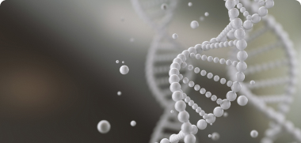
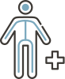
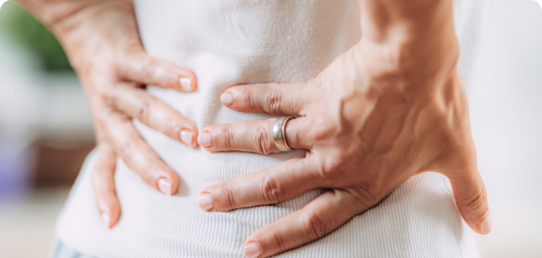
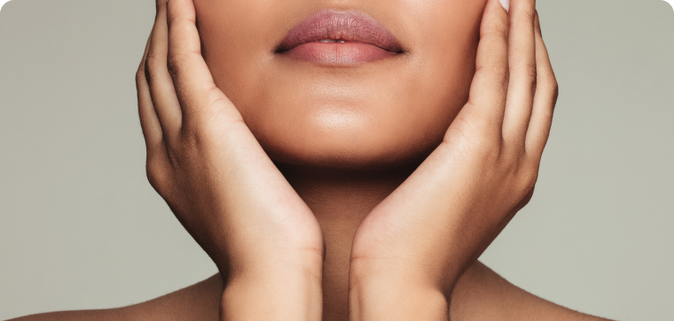

기기관리
미베르에서 신체뿐 아니라 마음과 세포의 건강까지 얻어보세요.
미베르의 기기 관리는 자연 회복을 통한 더 나은 삶을 지원합니다.
고압산소테라피
(HBOT – Heperbaric oxygen theraphy)
고압산소테라피(HBOT)는 순수한 100% 산소를 고기압에서 흡입하는 방법입니다.
이 과정은 체내 산소 수준을 평소보다 20배이상 높이며,
신체의 치유 및 회복 능력을 빠르게 촉진하는 것으로 입증되어 왔습니다.
우리의 프로그램은 다각화된 프로그램을 결합하여 고압산소테라피의 효과를 크게 향상시켜, 신체와 뇌가 최대의 잠재력에 도달할 수 있도록 돕습니다.
우리의 혁신적인 HBOT 프로그램은 젊음의 활력을 회복시키고 삶의 질을 향상시킵니다. 이 프로그램은 여러 건강 문제를 개선하는 데에도 효과적입니다.
-
노화방지
-
뇌 기능 개선
-
근육통 방지
-
염증 개선
-
피부 재생 촉진
-

세포 활성화
고압산소테라피는 신체에 어떤 영향을 미치나요?
우리의 몸과 마음은 항상 산소를 필요로 합니다. 하지만 노화, 부상, 질병, 등의 이유로 체내 산소 수치가 감소할 수 있습니다. 다행히도, 우리 몸은 자연적으로 회복할 수 있는 능력을 가지고 있습니다. 우리의 고압산소테라피는 신체의 자연 치유 잠재력을 발휘하도록 돕습니다.
- 혈액 내 산소량 증가
- 재생 및 치유 과정 촉진
- 줄기세포의 증식 촉진
- 새로운 혈관 생성 유도
-
마음의 건강
- 뇌 기능 향상 : 더 나은 기억력, 주의력, 집중력
- 강화된 정신 능력 : 정신 작업 속도 증가
- 실행 기능 강화 : 유연한 사고와 의사 결정 능력 향상
- 기분 개선 : 전반적인 정신 건강 증진
-

신체의 건강
- 신체 능력 향상 : 체력, 근력, 협응력, 균형감각, 가동범위 향상
- 에너지 증가 : 힘과 지구력 증대
- 수면 개선 : 더 나은 수면과 몸의 회복
- 자세 교정 : 동적/정적 자세 분석 및 교정
-
세포의 건강
- 면역력 강화 : 강한 면역 체계 유지
- 줄기세포 활성화 : 조직 재생 촉진
- 노화 방지 : 텔로미어 연장과 노화 세포 감소
- 세포 에너지 증가 : 미토콘트리아 기능 향상
크라이오테라피
영하 170도의 극저온 환경에 신체를 노출시키는 방법은 염증을 줄이고 근육 회복을 촉진하며, 면역력을 강화합니다.
이 과정은 노화를 늦추고 신체의 자연 치유 능력을 극대화하여 오랫동안 건강을 유지하게 합니다.
-
염증 및 부종 감소
혈관을 수축시켜 관절염, 근육염증, 소프트 티슈 손상 같은 염증 및 부종의 감속
-

통증 완화
신경 활동을 억제하여 만성 통증이나 운동 관련 손항 후 통증 완화
-
근육 회복 및 회복 시간 단축
근육 피로 완화, 근육 회복 촉진, 근육 손상의 치유 과정을 가속화하여 회복 시간 단축
-

체지방 감소 및 체중 관리
대사를 촉진시켜 체내 에너지 소비를 높여 체지방 감소 및 체중 관리
-

피부 개선
피부의 혈액순환 촉진, 여드름, 홍반, 미세주름 등의 피부 문제 개선
-
스트레스 감소
스트레스 호르몬 분비를 감소시켜 신체 및 정신적 스트레스 완화
1회당 비용
- - 고압산소치료 : 1회당 25만원
- - 크라이오테라피 : 1회당 5만원